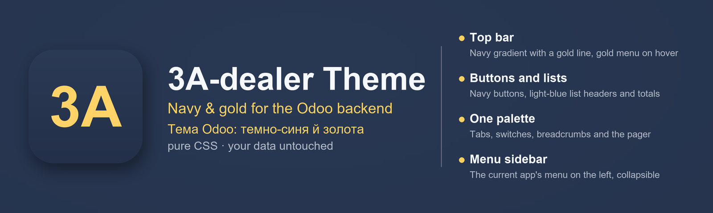

English · Українською · Français · Deutsch · Español · Nederlands · Polski

Version 19.0.1.2.9 · Odoo 19 · pure CSS, no SCSS rebuild, no JS
A calm, consistent palette across the whole backend instead of the default purple. Pure CSS: nothing to recompile, nothing to unbreak later.
Pure CSS — no SCSS recompilation, no JavaScript. Installs and uninstalls on its own (depends only on web). Designed to match the 3A-dealer app, but works with any Odoo.
Questions, bugs, feature requests: adealer@aktiv.in.ua. Answered in English or Ukrainian.
If something misbehaves, include your Odoo version and what you expected to see — that is the shortest path to a fix.
Odoo 19 · чистий CSS, без перекомпіляції SCSS і без JS
Спокійна послідовна палітра по всьому бекенду замість типового фіолетового. Чистий CSS: нічого не перекомпільовується і нічого потім не ламається.
Чистий CSS — без перекомпіляції SCSS і без JavaScript. Ставиться й видаляється незалежно (залежить лише від web). Пасує до додатка 3A-dealer, але працює з будь-якою Odoo.
Питання, помилки, побажання: adealer@aktiv.in.ua. Відповідаємо українською або англійською.
Якщо щось працює не так, напишіть версію Odoo і що ви очікували побачити, — це найкоротший шлях до виправлення.
backend theme · navy · gold · dark blue · Odoo 19 theme · CSS theme · тема · бекенд · оформлення
Version 19.0.1.2.9 · Odoo 19 · pur CSS, sans recompilation SCSS, sans JS
Une palette sobre et cohérente dans tout le backend à la place du violet par défaut. Pur CSS : rien à recompiler, rien à réparer plus tard.
Pur CSS — sans recompilation SCSS, sans JavaScript. S'installe et se désinstalle seul (ne dépend que de web). Conçu pour s'accorder avec l'application 3A-dealer, mais fonctionne avec n'importe quel Odoo.
Questions, bugs, demandes de fonctionnalités : adealer@aktiv.in.ua. Réponse en anglais ou en ukrainien.
Si quelque chose ne fonctionne pas comme prévu, indiquez votre version d'Odoo et ce que vous attendiez — c'est le chemin le plus court vers une correction.
Version 19.0.1.2.9 · Odoo 19 · reines CSS, ohne SCSS-Neubau, ohne JS
Eine ruhige, einheitliche Farbpalette im gesamten Backend statt des Standard-Lila. Reines CSS: nichts neu zu kompilieren, später nichts zu reparieren.
Reines CSS — keine SCSS-Neukompilierung, kein JavaScript. Lässt sich eigenständig installieren und deinstallieren (hängt nur ab von web). Passend zur App 3A-dealer gestaltet, funktioniert aber mit jedem Odoo.
Fragen, Fehler, Funktionswünsche: adealer@aktiv.in.ua. Antwort auf Englisch oder Ukrainisch.
Wenn etwas nicht wie erwartet funktioniert, nennen Sie Ihre Odoo-Version und was Sie erwartet haben — das ist der kürzeste Weg zur Lösung.
Versión 19.0.1.2.9 · Odoo 19 · CSS puro, sin recompilar SCSS, sin JS
Una paleta sobria y coherente en todo el backend en lugar del morado predeterminado. CSS puro: nada que recompilar ni que arreglar después.
CSS puro — sin recompilar SCSS, sin JavaScript. Se instala y desinstala por sí solo (solo depende de web). Diseñado para combinar con la aplicación 3A-dealer, pero funciona con cualquier Odoo.
Preguntas, errores, solicitudes de funciones: adealer@aktiv.in.ua. Respondemos en inglés o en ucraniano.
Si algo no funciona como debería, indique su versión de Odoo y lo que esperaba ver — es el camino más corto hacia la solución.
Versie 19.0.1.2.9 · Odoo 19 · pure CSS, geen SCSS-herbouw, geen JS
Een rustig, consistent palet in de hele backend in plaats van het standaard paars. Pure CSS: niets te hercompileren, later niets te repareren.
Pure CSS — geen SCSS-hercompilatie, geen JavaScript. Installeert en verwijdert zichzelf zelfstandig (hangt alleen af van web). Ontworpen bij de app 3A-dealer, maar werkt met elke Odoo.
Vragen, bugs, functieverzoeken: adealer@aktiv.in.ua. Antwoord in het Engels of Oekraïens.
Werkt iets niet zoals verwacht, vermeld dan uw Odoo-versie en wat u verwachtte te zien — dat is de kortste weg naar een oplossing.
Wersja 19.0.1.2.9 · Odoo 19 · czysty CSS, bez przebudowy SCSS, bez JS
Spokojna, spójna paleta w całym backendzie zamiast domyślnego fioletu. Czysty CSS: nic do ponownej kompilacji, nic do naprawiania później.
Czysty CSS — bez ponownej kompilacji SCSS, bez JavaScriptu. Instaluje się i odinstalowuje samodzielnie (zależy tylko od web). Zaprojektowany z myślą o aplikacji 3A-dealer, ale działa z każdym Odoo.
Pytania, błędy, prośby o funkcje: adealer@aktiv.in.ua. Odpowiadamy po angielsku lub ukraińsku.
Jeśli coś działa nie tak, podaj swoją wersję Odoo i to, czego się spodziewałeś — to najkrótsza droga do poprawki.